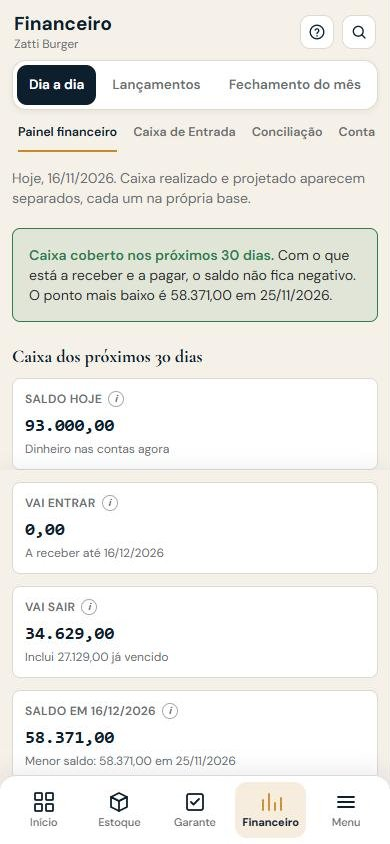

O saldo de hoje não paga a conta do dia 25: como prever o caixa do restaurante
Projeção de 30 dias, contas a pagar e a receber, conciliação do extrato e provisão de férias, 13º e FGTS. O método vale para caderno, planilha ou app.
Publicado em 16/11/2026
O dono abre o aplicativo do banco, vê o saldo e respira. Dez dias depois, o boleto do fornecedor, o aluguel e o adiantamento da equipe vencem na mesma semana, e o dinheiro que parecia sobrar não existe mais. O problema não era falta de venda. Era falta de olhar para a frente.
No livro Restaurante no Controle, o consultor Vinícius Zanetti coloca o fluxo de caixa no primeiro bloco da etapa Estrutura do Método M.E.G.A., antes de qualquer investimento ou expansão. Esta reportagem mostra como montar a projeção de 30 dias, achar o dia de menor saldo, conferir o extrato e separar o dinheiro de férias, 13º e FGTS, com qualquer ferramenta.

Por que o saldo do banco engana o dono do restaurante?
O saldo mostra o que está na conta agora. Não mostra o que já está comprometido. Uma conta vencida e não paga continua dentro do saldo. O boleto que vence na semana que vem também. Do outro lado, parte do que foi vendido hoje no cartão ou nos aplicativos de delivery só cai na conta depois, em datas que dependem de cada contrato.
Por isso dois números precisam andar separados: o caixa realizado, o que de fato entrou e saiu, e o caixa projetado, o que vai entrar e sair nos próximos dias.
"Com o fluxo de caixa em funcionamento, o empresário passa a agir com antecipação, não com urgência."Vinícius Zanetti, no capítulo Estrutura do livro Restaurante no Controle
Não é falta de dinheiro. É dinheiro com data marcada para sair.
Como fazer o fluxo de caixa projetado do restaurante?
A conta é simples e cabe num caderno. O trabalho está em não esquecer nenhuma linha.
- Comece pelo saldo de hoje. Some o que está em todas as contas e no caixa físico. É o ponto de partida, não o resultado.
- Liste o que vai entrar, com data. Vendas no cartão a receber, repasses dos aplicativos, valores que algum cliente deve. Cada entrada na data em que cai na conta, não na data da venda.
- Liste o que vai sair, com data. Fornecedores, aluguel, folha, impostos, parcelas, contas de consumo, fatura do cartão. Inclua o que já venceu e não foi pago: essa conta não sumiu.
- Calcule o saldo dia a dia. Saldo do dia anterior, mais o que entra, menos o que sai. Repita para os próximos 30 dias.
- Marque o dia de menor saldo. É o número mais importante da projeção.
| Linha da projeção | O que entra nela | Erro comum |
|---|---|---|
| Saldo de hoje | Todas as contas e o caixa físico | Olhar só a conta principal |
| Entradas | Cartão, repasse de aplicativo, valores a receber | Lançar na data da venda, não na data em que o dinheiro cai |
| Saídas | Fornecedores, aluguel, folha, impostos, parcelas, fatura | Esquecer a conta vencida e não paga |
| Provisões | Parte de férias, 13º e FGTS | Deixar tudo para o fim do ano |
| Saldo do dia | Saldo anterior + entradas - saídas | Olhar só o saldo do último dia |
O que é o dia de menor saldo e por que ele importa?
O saldo do fim do mês pode ser positivo e, mesmo assim, o restaurante ficar sem dinheiro no meio do caminho. Basta as saídas se concentrarem antes das entradas. O dia de menor saldo mostra quando isso acontece e de quanto é o aperto.
Com essa data na mão, o dono tem tempo de agir: negociar o vencimento com um fornecedor, segurar uma compra que pode esperar, cobrar um valor em aberto. Sem ela, descobre o buraco no próprio dia, e a saída costuma ser o cheque especial ou um empréstimo caro. O peso dos juros no caixa está na matéria Selic em 13,75%: como os juros chegam ao restaurante.
Se o aperto se repete todo mês, mesmo com o restaurante vendendo bem, o problema pode ser estrutural. É o caso do capital de giro, explicado em Vende bem e falta dinheiro? É capital de giro.
Como organizar contas a pagar e a receber no restaurante?
A projeção só é boa se as contas estiverem todas num lugar só. O livro coloca o lançamento das despesas no fluxo de caixa entre as rotinas diárias da etapa Garante, ao lado do registro do faturamento por canal e do fechamento do caixa com conferência de valores.
"Um fluxo de caixa que não é alimentado diariamente não serve."Vinícius Zanetti, no capítulo Garante do livro Restaurante no Controle
Na prática, três hábitos resolvem a maior parte. Todo boleto e toda nota entram na lista no dia em que chegam, não no dia do vencimento. Cada conta tem data e valor. E, ao pagar, alguém dá baixa. Olhar a lista dos próximos dias toda manhã evita a multa por esquecimento.
Para quem já tem conta atrasada, a matéria 37% dos restaurantes têm conta atrasada; e o perdão? mostra o cenário do setor.
O que é conciliação bancária e como fazer no restaurante?
Conciliar é conferir se o que está lançado bate com o que o banco registrou. Cada linha do extrato precisa ter um lançamento correspondente, e cada conta dada como paga precisa aparecer no extrato.
- Baixe o extrato do período de todas as contas.
- Ache o lançamento de cada linha. Valor e data precisam bater.
- O que está no extrato e não foi lançado vira lançamento novo, com categoria.
- O que foi lançado e não aparece no extrato vira pergunta: não foi pago, foi pago por outra conta ou o valor está errado.
A conciliação é o que garante que a projeção parte de números reais. Sem ela, o fluxo de caixa mostra o que o dono acha que pagou, não o que pagou. O livro coloca a revisão do fluxo projetado contra o realizado entre as rotinas semanais; conciliar antes dessa revisão evita comparar com dado errado. O calendário completo está em Rotina de gestão do restaurante: dia, semana e mês.
Como provisionar férias, 13º e FGTS no restaurante?
Provisão é o dinheiro separado todo mês para uma conta que só vence depois. O 13º é o exemplo clássico: pela Lei 4.090, de 1962, ele corresponde a 1/12 da remuneração devida em dezembro por mês de serviço. Quem não separa ao longo do ano precisa achar o valor inteiro de uma vez.
As férias seguem a mesma lógica, com um acréscimo: a Constituição garante férias anuais remuneradas com pelo menos um terço a mais do que o salário normal. Já o FGTS é depositado todo mês, até o dia 20, no valor de 8% da remuneração paga ou devida no mês anterior, conforme a Lei 8.036, de 1990, e a base inclui o 13º.
| Provisão | Quanto separar por mês | Base legal |
|---|---|---|
| 13º salário | 1/12 do salário, cerca de 8,33% | Lei 4.090/1962, art. 1º |
| Férias | 1/12 do salário mais um terço, cerca de 11,11% | Constituição, art. 7º, XVII |
| FGTS | 8% da remuneração, inclusive sobre o 13º | Lei 8.036/1990, art. 15 |
Os percentuais são a conta da própria lei aplicada ao salário. Os demais encargos dependem do regime tributário do restaurante e devem ser confirmados com a contabilidade.
No livro, a mão de obra entra na DRE gerencial já com as provisões. É por isso que dezembro não deveria ser surpresa. A estrutura completa está em DRE gerencial de restaurante: como montar e ler.
O que o dono de hamburgueria e pizzaria faz com isso
- Toda manhã: olhar as contas que vencem nos próximos dias.
- Todo dia: lançar as despesas e o faturamento por canal.
- Toda semana: conciliar o extrato, revisar o projetado contra o realizado e anotar o dia de menor saldo dos próximos 30 dias.
- Todo mês: separar as provisões e fechar a DRE.
Caderno, planilha ou app: a ferramenta importa menos que a frequência. O lugar dessas rotinas no método está em Método M.E.G.A.: as 4 etapas da gestão.
Como o Zatti Hub faz isso
O Zatti Hub, app de gestão da Zatti que roda no navegador e pode ser instalado na tela do celular, tem um módulo Financeiro com essa rotina. O dono lança receitas, despesas e recorrências, dá baixa em contas a pagar e a receber, controla os cartões, concilia o extrato e fecha o mês. Notas e boletos chegam por uma Caixa de Entrada: upload, WhatsApp, pasta do Google Drive ou captura de NF-e pela SEFAZ, com certificado A1.
A partir do que foi lançado, o app calcula:
- o caixa de hoje e a projeção dos próximos 30 dias, com o dia de menor saldo;
- as provisões de férias, 13º e FGTS;
- em qual fatura cai cada compra feita no cartão;
- uma sugestão de categoria na conciliação do extrato, que pode entrar em arquivo OFX, CSV, PDF ou imagem;
- a DRE mês a mês, o Fluxo de Caixa, a DFC e o Painel M.E.G.A., com farol contra as metas e ponto de equilíbrio;
- um alerta diário pelo WhatsApp com as contas a vencer.
O que o app não faz
- Não tem integração bancária nem Open Finance: o extrato entra por arquivo.
- A conciliação sempre pede a confirmação de uma pessoa.
- Não classifica lançamentos sozinho por inteligência artificial; essa função está desligada.
- Não emite nota fiscal.
- Não integra com PDV, iFood ou 99Food, e o fechamento de vendas do dia não lança a receita no Financeiro sozinho.
- Não funciona sem internet.
O app faz a conta e avisa. Quem lança, confere e decide continua sendo o restaurante.
Perguntas frequentes
O que é fluxo de caixa projetado?
É a lista de tudo o que vai entrar e sair nos próximos dias, com data, somada ao saldo de hoje. Mostra o saldo de cada dia e, principalmente, o dia de menor saldo, quando o caixa fica mais apertado.
Quanto separar por mês para o 13º e as férias?
Pela lei, o 13º equivale a 1/12 da remuneração por mês trabalhado, cerca de 8,33% do salário. As férias têm um terço a mais, o que leva a provisão mensal a cerca de 11,11%. O FGTS é de 8% da remuneração. Os demais encargos dependem do regime tributário.
Com que frequência fazer a conciliação bancária?
O livro Restaurante no Controle trata o lançamento das despesas como rotina diária e a revisão do fluxo projetado contra o realizado como rotina semanal. Conciliar o extrato pelo menos uma vez por semana, antes dessa revisão, evita decidir em cima de número errado.
Fluxo de caixa e DRE são a mesma coisa?
Não. A DRE mostra se o mês deu lucro. O fluxo de caixa mostra quando o dinheiro entra e sai. Um restaurante pode fechar o mês com lucro e, mesmo assim, ficar sem dinheiro no dia em que vencem as contas.
Fontes
- Vinícius Zanetti, Restaurante no Controle, capítulos Estrutura e Garante.
- Lei nº 4.090/1962, que institui a gratificação de Natal (13º salário).
- Constituição Federal, art. 7º, XVII (férias com um terço a mais).
- Lei nº 8.036/1990, art. 15 (depósito mensal do FGTS).